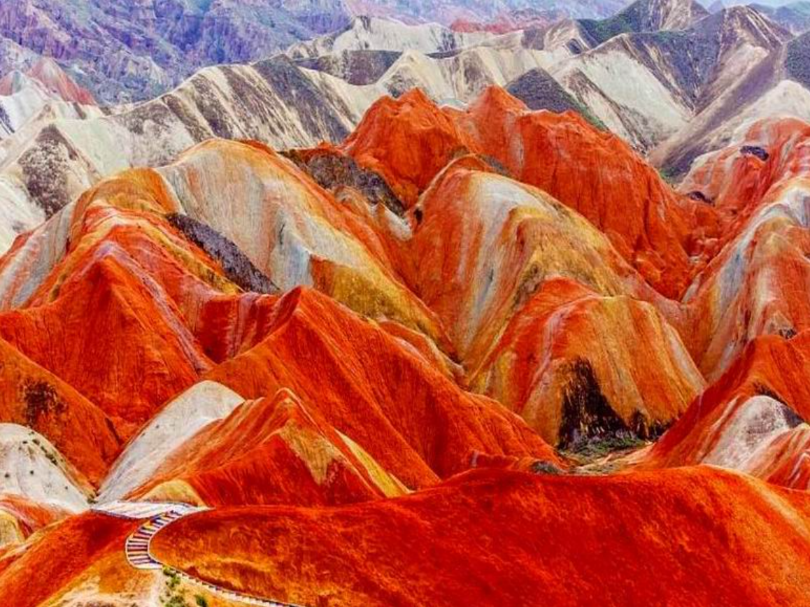
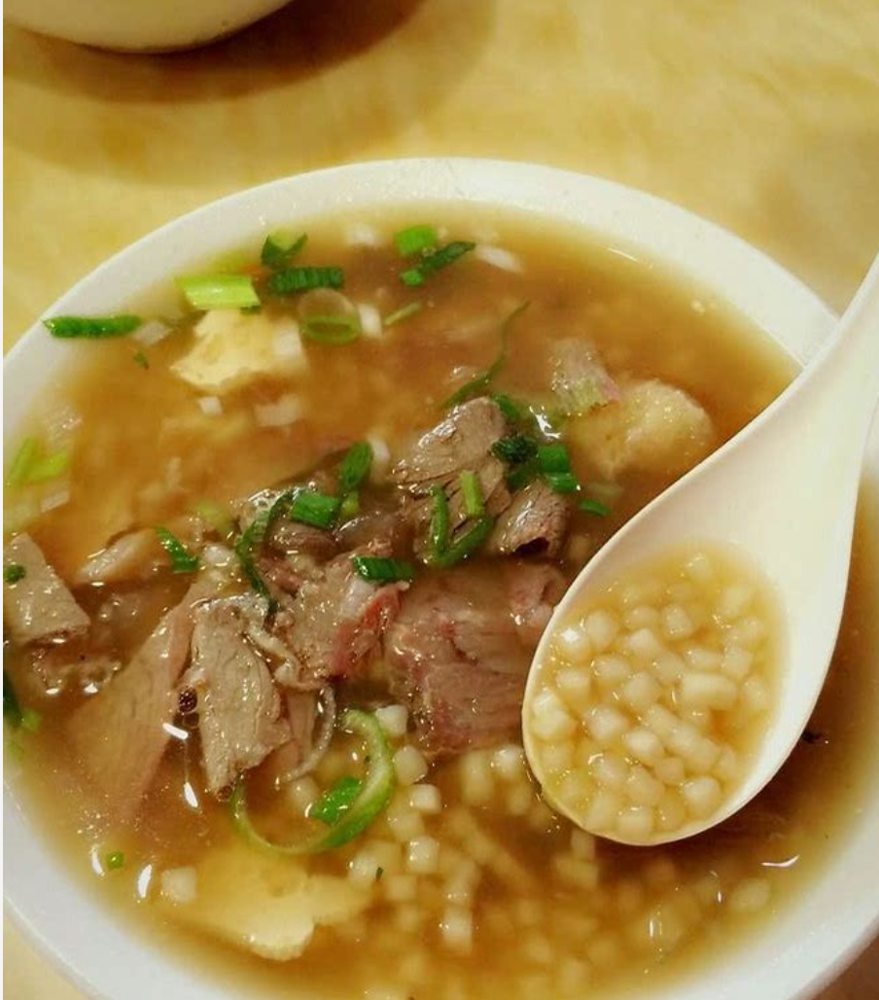
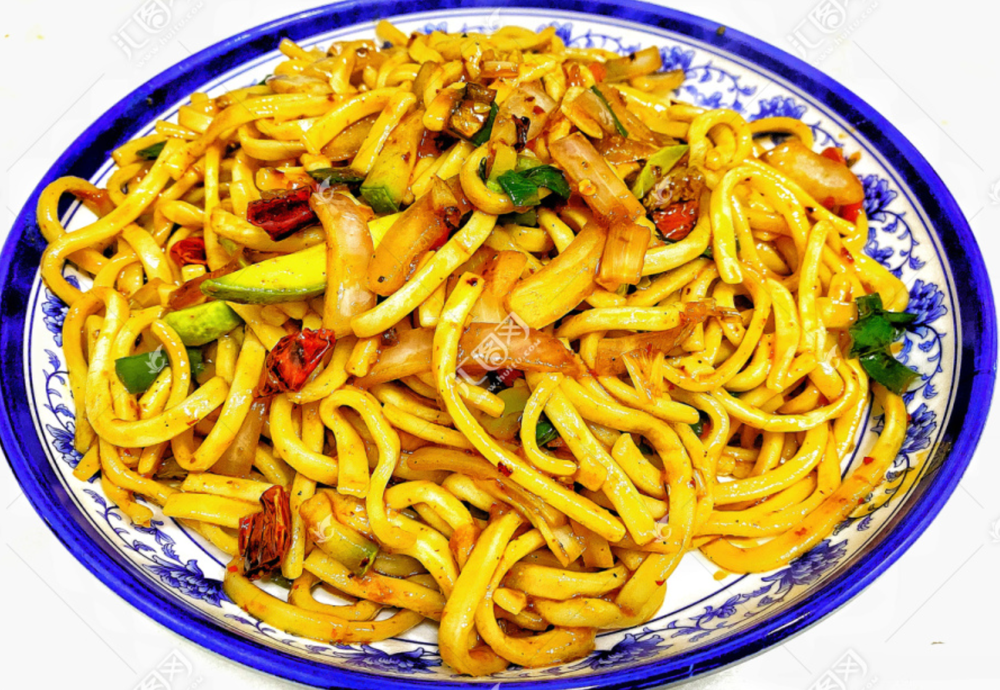

关于张掖
张掖，古称甘州，位于甘肃省西北部，是古丝绸之路上的重要城市， 素有"塞上江南"和"金张掖"的美誉。

丝路明珠，七彩张掖
张掖历史悠久，文化灿烂，自然风光壮美。这里既有广袤的草原、 壮丽的沙漠，又有独特的丹霞地貌和丰富的人文景观。
作为河西走廊上的重要节点，张掖承载着千年丝路文明的记忆， 是东西方文化交流的重要见证。
了解更多探索张掖
浏览我们精心准备的栏目，了解张掖的方方面面

张掖美食
品味丝路风情，感受舌尖上的张掖

牛肉小饭
张掖特色早餐，将面切成小丁，配以牛肉汤和牛肉片，口感筋道，味道鲜美。
搓鱼面
手工搓制的面条，两头尖，中间粗，形似小鱼，口感爽滑，配以各种臊子食用。

炒炮
形似炮仗的面条，配以豆芽、小白菜等蔬菜炒制而成，口感劲道，麻辣鲜香。
旅游景点
探索张掖的自然奇观和人文遗产